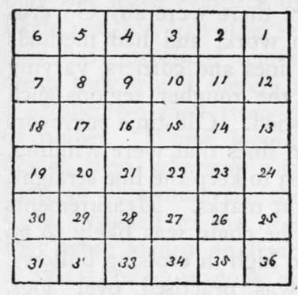
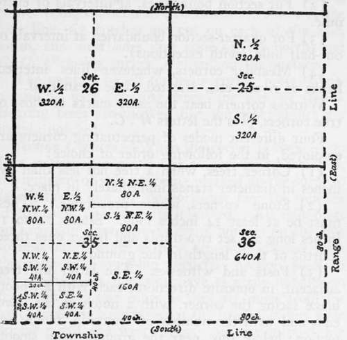

Blazes Survey Lines. Use Of The Compass. Part 3
Description
This section is from the book "Camping And Woodcraft", by Horace Kephart. Also available from Amazon: Camping and Woodcraft.
Blazes Survey Lines. Use Of The Compass. Part 3
The public lands of the United States are divided into townships, usually of six miles square (23,040 acres), as nearly as convergence of meridians allows. A township is sub-divided into thirty-six sections, each one mile square, as nearly as may be, which, as a general rule, are numbered as shown in Fig. 8, and are legally subdivided as indicated in Fig. 9.
Starting from an established corner, all trees that stand directly on the line of survey have two chops or notches cut on each side of them, without any other marks whatever. These are called "sight trees" or "line trees" (sometimes "fore and aft tree?"). Since there may not be enough trees actually intercepting the line of sight to make such a line conspicuous, a sufficient number of other treer. standing within not more than two rods of the line, on either side of it, are blazed on two sides diagonally, or quartering toward the line, or coinciding in direction with the line where the trees stand very near it. Blazes are not omitted where trees two inches or more in diameter are found on or near the line.
Fig. 8. Plan for Numbering Sections of a Township.
Where trees are scarce, bushes on or near the line are bent at right angles therewith, and receive a blow with the axe at the usual height of blazes from the ground, sufficient to leave them in a bent position, but not to prevent growth.
Fig. 9. Subdivision of Sections.
When the course is obstructed by swamps, lakes, or other impassable objects, the line is prolonged across by taking the necessary right angle offsets, or by traverse, etc., until the line is regained on the opposite side. At the intersection of lines on both margins, a post is set for a witness point, and two trees on opposite sides of the line are here marked with a blaze and notch facing the post; but on the margins of navigable rivers or lakes the trees are marked with the number of the fractional section, township, and range. Arabic figures are used exclusively.
Corner Marks
The following corners are marked:
(1) For township boundaries, at intervals of every six miles.
(2) For section boundaries, at intervals of every mile.
(3) For quarter-section boundaries, at intervals of one-half mile (with exceptions).
(4) Meander corners, wherever lines intersect banks of rivers, etc., directed to be meandered.
Witness corners bear the same marks as those of true corners, plus the letters TV. C.
Four different modes of perpetuating corners are employed, in the following order of choice:
(1) Corner trees, when a tree not less than five inches in diameter stands immediately in place.
(2) Stone corners, where procurable. These must be at least 14 inches long. Stones 14 to 18 inches long are set two-thirds and larger ones three-fourths of their length in the ground.
(3) Posts and witnesses. The latter are trees adjacent, in opposite directions, each with a smooth blaze facing the corner, with a notch at the lower end, and with the number of township, range, and section; below this, near the ground, on a smooth blaze are marked the letters B. T. ("bearing tree"). Blazes may be omitted from smooth-barked trees. Where there are no trees, witness pits are dug, two feet square, and at least one foot deep.
(4) Posts and mounds. A mound is erected around the corner post, and a marked stone, or some charcoal, or a charred stake, is deposited a foot below the surface on the side toward which the line runs.
Township Corner Post
This projects two feet above the ground, the projecting part being squared.
When the corner is common to four townships, the post is set cornerwise to the lines, and on each flattened side is marked the number of the township, range, and section, thus: T. 1 S.; R. 2 W.; S. 36.
This example reading "Township 1 South, Range 2 West, Section 36." Six notches are cut on each of the four edges.
If the post is on a closing corner, where the line does not continue straight ahead, but is offset to allow for convergence of meridians, this closing corner being common to two townships south of the base line, six notches are cut on each of the east, south, and west sides, but none on the north, and 67. 67. ("closing corner") is cut on the surface.
The position of all township corner posts is witnessed by four "bearing trees," or pits, or stones. Bearing trees are marked like the post; stones are merely notched.
Section Corners
When the corner is common to four sections, the post is set cornerwise to the lines, the numbers of sections being marked on the surfaces facing them, and on the northeast face the number of township and range is inscribed. All mile-posts on township lines have as many notches on the two corresponding edges as they are miles distant from the respective township corners. Section posts in the interior of a township have as many notches on the south and east edges as they are miles from the south and east boundaries of the township, but none on the north and west edges. All section posts are "witnessed" as above. Section corner stones are merely notched.
Quarter-Section Corners
These are merely marked *4 and "witnessed".
Red chalk is used to make marks more conspicuous.
Use Of The Compass
In Volume I (pp. 168-169) some advice was given as to selecting a compass. Let me repeat that it should be of hunting case pattern, not only because an open faced one is easily broken, but because a cover helps to exclude dust and moisture. The least moisture under the glass will cause the needle to stick (if dampness gets inside anyway, dry the compass by a gentle heat: too much heat will destroy the magnetism). And there is another reason: the friction of one's pocket on the glass of a compass may magnetize it and attract the needle (touching the glass with a wet finger will remedy this).
Continue to:
- prev: Blazes Survey Lines. Use Of The Compass. Part 2
- Table of Contents
- next: Blazes Survey Lines. Use Of The Compass. Part 4